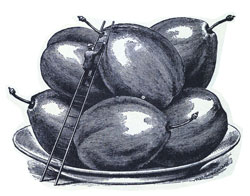

Go back to this story's main page.
Finding The Most Flavorful Fruit
When amber sap oozes down your peach tree and the books don't tell you what it is, whom do you call? If you're looking for an unusual apple variety such as 'Kandil Sinap,' who can put you in touch with nurseries selling the trees? The North American Fruit Growers, that's who.
Founded in 1967, NAFEX is a non-profit group of more than 2,500 fruit enthusiasts throughout the United States Canada and other parts of the world who are committed to the discovery, cultivation and appreciation of exceptional varieties of fruits and nuts. These amateur and commercial fruit growers collectively possess a wealth of wisdom about fruit and nut cultivation, pests, sources and oddities. And they share their knowledge liberally with all who join their ranks.
One member compare NAFEX to monasteries during Dark Ages, where knowledge and plant varieties were kept alive for future generations by cataloging, propagating and maintaining fruits and nuts. A splendid array will be available for our descendants, too, through the efforts of NAFEX For example, in the past hundred years, more than 5,000 apple varieties have been dropped from commercial markets. Yet NAFEX members have many of these antique apples in their own yards.
Finding, identifying and preserving fruit varieties from the past is one of the missions that defines NAFEX.
The organization also works to extend the geographic and climate limits of various fruits, and breeds, tests and selects new cultivars and rootstocks that display superior taste and/or disease resistance. +
Those who join can tap into the wealth of information and genetic stocks NAFEX has gathered. Members communicate through their quarterly publication, Pomona (after the Roman goddess of fruit), available only to paying members. The magazine's editorial content, a lively mix of articles written solely by members, covers organic methods, as well as chemical-management techniques. Minor crops, such as papaw, jujube and acorn, are given equal space next to apples, pears and walnuts.
"We maintain a pomology lending library with the catalog on our Web site (www.nafex.org). We also print the library catalog in Pomona," says NAFEX President Ethan Natelson, of Houston, Texas. "Books and videotapes can be obtained from the library for essentially the price of postage."
HOW IT TOOK ROOT
A group of fruit hobbyists who communicated by round-robin letter networks published the first NAFEX newsletter in August 1967. They wanted to archive the discoveries they had made and share information with members. In 1968, the first NAFEX meeting was held at fruit-grower John Moore's farm in Crawfordville, Indiana. About 20 members exchanged scion wood for grafting and seeds. One attendee, Paul Thompson, moved to California three years later and founded the California Rare Fruit Growers Association while promoting NAFEX on the West Coast. Many of the group's founders are now deceased, but they left a large legacy, which includes short-season peaches bred for cold climates, improved warm climate grape varieties, the Warren pear and the promotion of mayhaws (edile hawthorn).
STILL GROWING
Today, thousands of members exchange information and scion wood through the quarterly newsletter and at annual meetings. Among its members, NAFEX counts more than 60 fruit enthusiasts and experts in other countries, including India, Belgium and New Zealand.
NAFEX's newest method of communication, an electronic discussion group, is a place where insects and diseases can be identified within mere minutes, and requests for rootstocks and scion wood from hard-to-find cultivars are met in a matter of hours. Fascinating fruit facts are discussed in this online community forum. Within a recent two-day period, the merits of loquats, mayhaws and figs were deliberated, as was the best way to graft an interstern on plum trees and methods to slow flowering in cold climates.
The discussion group is open to NAFEX members only and subscription information is printed in every issue of Pomona.
The next NAFEX annual meeting will be held September 11-14 in St. Paul, Minnesota. Workshops will include growing fruit in cold climates, fruit growing for beginners and soil management. Tours of local orchards and the University of Minnesota Horticulture Research Center are also scheduled to take place at the meeting.
To join NAFEX, write to:
NAFEX
1716 Apples Road
Chapin, IL 62628
www.nafex.org
Dues are $10 a year or $19 for two years. Membership includes a free subscription to the NAFEX quarterly newsletter Pomona
|
 |
|
|